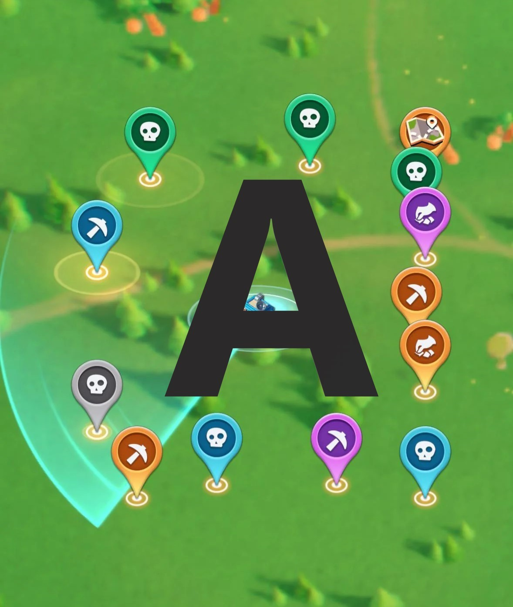
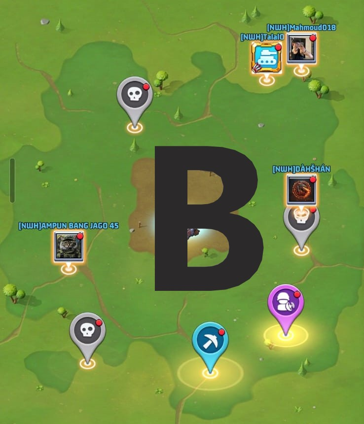

[NWH] Night Watch
📡 Kapsamlı Radar Görevleri Kılavuzu
Hiçbir görevi kaybetmeden Düello VS puanlarını nasıl en üst düzeye çıkarırsın
Hiçbir görevi kaybetmeden Düello VS puanlarını nasıl en üst düzeye çıkarırsın
Radar görevleri, haritada beliren ve çeşitli ödüller veren günlük görevlerdir; doğru şekilde kullanıldığında oyundaki en önemli puan kaynaklarından biridir.
Neden önemli? Çünkü sana şunları verir:
Bu kılavuzda, radar görevlerini rastgele toplayıp değerli puanlar kaybetmek yerine nasıl akıllıca yöneteceğini öğreneceksin.
Selamün aleyküm,
Bazı üyelerin radar görevlerini kendilerine ayrılan günden önce tükettiğini görüyoruz, bu nedenle lütfen doğru yönteme dikkat edin:
A: Başlangıçta radar görevi A görselindeki gibidir. Görevi normal şekilde tamamla.
B: Tamamladıktan sonra B görselindeki duruma geçer ve üzerinde kırmızı nokta 🔴 belirir; bu, ödülün teslim alınmaya hazır olduğu anlamına gelir.
❌ Radar günü dışında ona dokunma ve ödülü almama.
✅ Radar günü gelene kadar tüm görevleri bu durumda (kırmızı noktayla) bırak, sonra VS puanı almak için teslim al.
Önemli hatırlatma: Görevi tamamlamak serbesttir, ancak ödülü teslim almak yalnızca radar gününe bırakılmalıdır.
Radar görevinin çalışma mekaniği dört basit aşamadan geçer:
Her radar görevi yalnızca iki durumdan geçer ve ikisini ayırt etmek önemlidir:


❌ Çoğu oyuncu, kırmızı nokta belirir belirmez doğrudan göreve basıp düşünmeden ödülü alır.
Sonuç: Görevleri doğru güne kadar bekleyip toplasalardı sayılacak olan Düello VS puanlarını kaybederler.
Bu, kılavuzdaki en önemli noktalardan biridir. Radar görev deponda her zaman en az bir boş yuva bırak.
Neden? Çünkü görev sayacı üst sınıra ulaştığında (örneğin 35/35), yeni görevlerin belirme zamanlayıcısı duraklar ❌ ve böylece eklenecek olan görevlerin tamamını kaybedersin.
Radar görevlerini yönetmek için örnek bir haftalık tablo (sunucundaki Düello VS takvimine göre düzenle):
| Gün | İşlem |
|---|---|
| Pazar | 🟡 Hazırlık |
| Pazartesi | 🟢 Teslim al |
| Salı | 🔵 Yığ |
| Çarşamba | 🟢 Teslim al |
| Perşembe | 🔵 Yığ |
| Cuma | 🟢 Teslim al |
⚠️ Günleri sunucundaki Düello VS'nin 1., 3. ve 5. günlerine göre düzenle.
Çoğu oyuncu bunu bilmiyor: bazı radar görevleri stamina tüketir. Yani faydayı ikiye katlayabilirsin:
Bu şekilde önce stamina tüketiminden Silahlanma Yarışı puanı alırsın, sonra teslim aldığında Düello VS puanı — çift kazanç 💪.
Bir ittifaktaysan, diğer üyeler görevini tamamlamana yardım edebilir; bu durumda sen hiç stamina harcamadan kırmızı nokta otomatik olarak belirir.
Evet, her görevin kendine ait bir geri sayımı vardır. Bu süre içinde tamamlanmazsa otomatik olarak kaybolur.
Evet, depo tamamen dolduğunda (örnek: 35/35) zamanlayıcı durur. Bu yüzden her zaman bir yuvayı boş bırakmanı öneririz.
Çünkü 34/35'te kalmak yeni görev belirme zamanlayıcısını çalışır tutar, 35/35 ise onu durdurur ve eklenecek olan görevleri kaybedersin.
Evet, "kırmızı noktalı tamamlanmış" durumda kalıp teslim alınmadığı sürece, teslim almasını en uygun Düello VS gününe bırakabilirsin.
Bu, asla gözden kaçırmaman gereken bir sayı 👇
Tek bir radar görevi, doğru günde teslim alındığında Düello VS'de sana yaklaşık 25.000 puan verir.
Bu kılavuzda açıkladığımız yığma stratejisini uygulayarak, teslim alma gününe şu şekilde ulaşırsın:
Toplam: tek seferde teslim alınmaya hazır 80 görev.
🚨 Tek bir günde yaklaşık iki milyon puan — yığmak ve doğru Düello VS gününü beklemek yerine görevlerini rastgele teslim alırsan kaybedeceğin şey işte bu!
Radar görevleri sıradan görevler değildir; Düello VS ve Silahlanma Yarışı puanlarını en üst düzeye çıkarmak için stratejik bir araçtır. Altın kural: sürekli tamamla, yalnızca radar gününde teslim al ve her zaman 34/35'te kal.